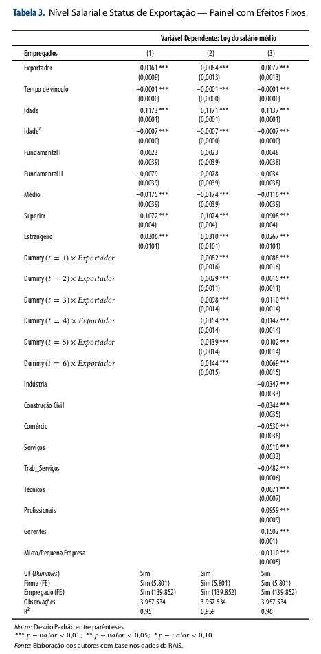
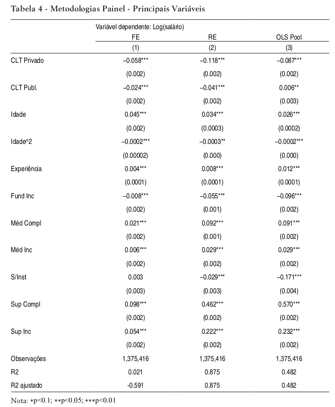

Econometria III
Questões - Dados em Painel e Efeitos Fixos
Questão 1
Assinale Verdadeiro ou Falso:
(\(\phantom{X}\)) Dados em painel também são chamados de dados longitudinais, e diferem dos dados em seções transversais repetidas pois, em um painel não há repetição dos indíviduos ao longo do tempo.
(\(\phantom{X}\)) Na análise econométrica de dados em painel, não podemos simplesmente supor que as observações sejam independentemente distribuídas ao longo do tempo.
(\(\phantom{X}\)) Modelos DID tipicamente fazem uso de um experimento natural, onde algum evento exógeno altera o ambiente no qual as unidades de observação estão inseridas, separando-as em tratados e não-tratados.
(\(\phantom{X}\)) Em um modelo de efeito fixo \(y_{it}=\beta_1x_{it}+a_i+u_{it}\), o termo \(a_i\) é constante ao longo do tempo \(t\) e deve ser observado para podermos estimar corretamente \(\beta_1\).
(\(\phantom{X}\)) No modelo acima, o termo \(a_i\) captura todos os fatores constantes no tempo e que são individuais (i.e. valores específicos da unidade \(i\)).
(\(\phantom{X}\)) A principal razão para coletar dados em painel é considerar que a heterogeneidade não observada \(a_i\) é correlacionada com o regressor \(x_{it}\), e então estimar um modelo de efeitos fixos.
(\(\phantom{X}\)) Um painel equilibrado possui o mesmo número de observações de períodos, \(T\), para cada um dos \(N\) indíviduos. Em um total de \(N+T\) observações.
(\(\phantom{X}\)) O estimador de efeitos fixos faz uso da transformação intragrupo que é assim definida para o regressor \(x_{it}\), \(\ddot{x}_{it}=x_{it} - T^{-1}\sum_t x_{it}\).
(\(\phantom{X}\)) O estimador de efeito fixo fará a regressão da variável dependente centrada na média, \(\ddot{y}_{it}\), contra o regressor observado \(x_{it}\).
(\(\phantom{X}\)) Se a cardinalidade do efeito fixo \(a_i\) for igual a \(N\), então na regressão \(y_{it}=\beta_1x_{it}+a_i+u_{it}\) perderemos \(N\) graus de liberdade além daqueles necessários para estimar \(\beta_1\).
Questão 2
Considere as observações \(\{(y_{it}, x_{it})\}_{i=1, t=1}^{i=N, t=T}\) iid e que seguem o modelo linear
\[y_{it}=\beta_1 x_{it}+\alpha_i +\lambda_i t+u_{it}\] onde \(\alpha_i+\lambda_i t\) são fatores não-observados individuais e com tendência temporal determinística.
Proponha um estimador para \(\beta_1\)
Mostre que este estimador é consistente para \(\beta_1\), se assumirmos exogeneidade estrita do regressor, isto é \(E[u_{it}|x_{i1}, \ldots , x_{iT}]=0\).
Questão 3
Considere o seguinte modelo em painel com \(i=1, \ldots , N\) e \(t=1, \ldots , T\).
\[y_{it}=\beta_1 x_{it}+a_i+u_{it}.\] Onde \(E[u_{it}|x_{i1}, x_{i2}, \ldots, x_{iT}, a_i]=0\) (hipótese de exogeneidade estrita).
Se os erros idiossincráticos \(u_{it}\) forem serialmente não correlacionados com variância constante \(\sigma_u^2\), mostre que o estimador de primeira diferença irá induzir um correlação de \(\Delta u_{i,t}\) com \(\Delta u_{i,t+1}\) de \(-0,5\). (1,0 ponto)
Considere a transformação intragrupo para estimação de efeitos fixos, \(\ddot{z}_{it}=z_{it}-\frac{1}{T}\sum_{t}z_{it}\). Mostre que o estimador de efeitos fixos nas condições do item anterior, produzirá uma correlação serial de \(corr(\ddot{u}_{it},\ddot{u}_{is})=-1/(T-1)\), para todo \(s\neq t\).
Agora considere que os erros idiossincrátricos são serialmente correlacionados, \(u_{it}=u_{i,t-1}+\varepsilon_{it}\) onde \(Var[\varepsilon_{it}]=\sigma_\varepsilon^2\) e o ruído \(\varepsilon_{it}\) não é serialmente correlacionado. Mostre que o estimador de primeira diferença irá eliminar a correlação serial nos resíduos. (0,5 ponto)
Considere que \(N>>T\) mas que ainda assim temos uma forte correlação serial nas observações de série temporal. Neste caso, qual estimador você prefere utilizar, primeira diferença ou efeitos fixos (i.e. transformação intragrupo)? Por quê? (0,5 ponto)
Considere que \(N>>T\) e não temos preocupação com correlação serial nas observações de série temporal. Neste caso, em quais situações você prefere utilizar os estimadores de primeira diferença e efeitos fixos (i.e. transformação intragrupo)? Por quê? (1,0 ponto)
Questão 4
Qual das seguintes suposições é necessária para obter estimadores de efeito fixo não viesados?
- Os erros são heterocedásticos.
- Os erros são serialmente correlacionados.
- As variáveis explicativas são estritamente exógenas.
- O efeito não observado está correlacionado com as variáveis explicativas.
Um estimador MQO agrupado que é baseado em variáveis centralizadas na média temporal é chamado de _____.
- estimador de efeitos aleatórios
- estimador de efeitos fixos
- estimador de desvios mínimos absolutos
- estimador de variável instrumental
Quais devem ser os graus de liberdade (gl) para estimativa de efeitos fixos se o conjunto de dados incluir N unidades de seção transversal ao longo de T períodos de tempo e o modelo de regressão tem k variáveis independentes?
- N-kT
- NT-k
- NT-N-k
- N-T-k
Qual dos seguintes tipos de variáveis não pode ser incluído em um modelo de efeitos fixos?
- Variável fictícia
- Variável dependente discreta
- Variável independente variável no tempo
- Variável independente constante no tempo
Qual das opções a seguir é uma propriedade da regressão de variável dummy?
- Este método é mais adequado para conjuntos de dados de painel com muitas observações transversais.
- O R2 obtido a partir deste método é menor do que o obtido a partir da regressão em dados centralizados pelo tempo.
- Os graus de liberdade não podem ser calculados diretamente com este método.
- As principais estatísticas obtidas a partir deste método são idênticas às obtidas a partir regressão em dados reduzidos pelo tempo.
Qual das opções a seguir é uma diferença entre um estimador de efeitos fixos e um estimador de primeira diferença?
- Os estimadores de efeitos fixos são sempre maiores que os estimadores de primeira diferença em uma análise de dados em painel de dois períodos.
- O estimador de efeitos fixos é mais eficiente que o estimador de primeira diferença quando os erros idiossincráticos são serialmente não correlacionados.
- O estimador de primeira diferença é mais sensível à não normalidade e à heteroscedasticidade.
- O viés no estimador da primeira diferença depende do período de tempo (T) da análise enquanto o viés no efeito fixo não depende de T.
Um economista deseja estudar o efeito da renda sobre a poupança. Ele coletou dados de 120 gêmeos idênticos. Qual dos seguintes métodos de estimativa é o método mais adequado, se a renda estiver correlacionada com o efeito familiar não observado?
- Estimativa de efeitos aleatórios
- Estimativa de efeitos fixos
- Estimativa de mínimos quadrados ordinários
- Estimativa de mínimos quadrados ponderados
Questão 5
Vamos provar a equivalência entre a regressão com expansão em dummies para efeitos fixos e a transformação intragrupo. Considere o modelo:
\[\begin{equation} y_{it}=\beta x_{it} + \alpha_i + u_{it} \end{equation}\]
Podemos considerar cada um dos \(N\) \(\alpha_i\) parâmetros a serem estimados juntamente com \(\beta\). Os valores destes \(\alpha_i\) são justamente os coeficientes associados as variáveis dummies. Portanto, nosso problema de estimação é:
\[\{\hat\beta, \hat\alpha_i\}_{i=1}^N=\arg \min_{b, a_i}\sum_i\sum_t\left(y_{it}-b x_{it} - a_i\right)^2.\]
Demonstre que a condição de primeira ordem (FOC) com relação a \(b\) implica em \(\sum_i\sum_t\left(y_{it}-b x_{it} - a_i\right)x_{it}=0\).
Utilizando a FOC com relação a \(a_i\), mostre que uma solução possível para cada um dos parâmetros \(\hat\alpha_i\) é:
\[\hat\alpha_i=\bar{y}_i-\hat\beta\bar{x}_i, \qquad \forall i=1, \ldots, N.\]
Mostre que \(\sum_i\sum_t\ddot{y}_{it}x_{it} =\sum_i\sum_t\ddot{y}_{it}\ddot{x}_{it}\). O mesmo ocorre para \(\sum_i\sum_t\ddot{x}_{it}x_{it} =\sum_i\sum_t\ddot{x}_{it}^2\). Onde \(\ddot{y}_{it}=y_{it}-\bar{y}_i\).
Utilizando os valores encontrados para \(\hat\alpha_i\) no item b), substitua na FOC do item a) e considerando o resultado obtido em c), mostre a equivalência do estimador de variáveis dummies com a transformação intragrupo. Ou seja, demonstre que \(\hat\beta=\frac{\sum_i\sum_t\ddot{y}_{it}\ddot{x}_{it}}{\sum_i\sum_t\ddot{x}_{it}^2}\).
Questão 6
No artigo de Souza, Ziegelmann, e Figueiredo (2020) intitulado “Uma Nota Sobre o Prêmio Salarial em Empresas Exportadoras Brasileiras”, os autores investigam a relação entre o status de exportação das empresas e o salário pago aos trabalhadores, testando se a exportação leva a um prêmio salarial para os empregados das empresas do setor externo ou se as empresas exportadoras já pagavam um salário maior antes de começar a exportar.
Foi utilizado um painel de dados empregador-empregado do Brasil para os anos de 2003 a 2013 obtidos da RAIS. Esta contém informações sobre trabalhadores individualmente identificáveis em todos os seus empregadores, idade, gênero, educação, ocupação, tempo na empresa entre outras características. Além dos dados do trabalhador, são também utilizados variáveis da firma, tais como o setor de atividade, se atua no setor privado, número de ocupações diferentes dentro da firma, além de informações sobre variável de interesse, qual seja, o status de exportação da firma, todas oriundas da Secretaria de Comércio Exterior (Secex).
O modelo empírico empregado para testar o impacto da firma ser exportadora sobre os salários dos trabalhadores segue uma especificação de efeitos fixos para tentar controlar a heterogeneidade não observada do empregado e da empresa:
\[\begin{equation} \ln W_{ijt}=\beta_0+\beta_1\text{Exportador}_{ijt}+\beta_2X_{it}+\alpha_i+\gamma_j+\varepsilon_{ijt}, \end{equation}\]
onde \(\ln W_{ijt}\) é o logaritmo do salário do indivíduo \(i\) que trabalha na empresa \(j\) no período de tempo \(t\) . \(\text{Exportador}_{ijt}\) é a variável dicotômica de interesse com valor 1 para os indivíduos que trabalham em firmas que se tornaram exportadoras a partir do quarto ano de cada coorte da amostra e 0 para os trabalhadores de firmas domésticas, \(X_{it}\) é um vetor de características pessoais dos indivíduos e das firmas nas quais estes trabalham, \(\alpha_i\) e \(\gamma_j\) são os efeitos fixos do indivíduo e da firma, respectivamente.
A Tabela abaixo apresenta os resultados para 3 estimações incrementais deste modelo.
Por que os autores não utilizaram diretamente um modelo MQO agrupado nos dados em painel? Explique em detalhes qual era o objetivo dos pesquisadores e quais os problemas que um MQO enfrentaria. (1,0 ponto)
A interpretação dos autores dos resultados do modelo (3) é que este apresenta evidências que “confirmam à existência de um mecanismo de autosseleção, onde as empresas pagam maiores salários por serem mais produtivas e, consequentemente, tornam-se aptas a entrar no mercado exportador.”. Explique com suas palavras como você interprete os resultados para as interações entre ano \(t\) e a variável binária \(\text{Exportador}\). (1,0 ponto)
Questão 7
Considere o modelo:
\[ \begin{align*} y_{it} &= \beta_0 + \beta_1 x_{it} + \varepsilon_{it}\\ \varepsilon_{it} &= a_i + u_{it} \end{align*} \] Os dados consistem de \(N\) observações de \(y\) (salário) e \(x\) (escolaridade) para \(T = 2\) períodos de tempo.
Interprete possíveis variáveis omitidas que possam fazer parte do efeito fixo \(a_i\). Você acredita que \(a_i\) possa ser não-correlacionado com \(x\)? Que implicações isso tem para a escolha de sua estratégia de estimação de \(\beta_1\)?
Um pesquisador propõe eliminar o efeito fixo, \(a_i\) , estimando por MQO um modelo em primeira diferenças do tipo:
\(y_{i1} − y_{i0} = \beta_1 (x_{i1} − x_{i0}) + (u_{i1} − u_{i0})\)
Outro pesquisador propõe eliminar o efeito fixo estimando por MQO um modelo de diferenças em relação à média:
\(y_{it}-\bar{y}_i=\beta_1 (x_{it}-\bar{x}_i)+(u_{it}-\bar{u}_i)\)
Onde \(\bar{y}_i=\frac{1}{T}\sum_{t}y_{it}\)
é a média da variável \(y\) para o indivíduo \(i\).
Um terceiro pesquisador propõe ainda a inclusão de variáveis dummy \(d_i\) indicando se a observação pertence ao indivíduo \(i\), estimando assim um MQO do modelo:
\(y_{it} = \beta_1 x_{it} + \sum_{i=1}^N a_i d_i + u_{it}\)
Qual destes estimadores é melhor? Por quê?
Questão 8
Considere um modelo simples de taxa de criminalidade (\(crim\)) em função de desemprego (\(desemp\)). Temos um painel com \(T=2\) e heterogeneidade não observada \(a_i\). Especificamos o modelo com uma variável dummy para identificar \(t=2\).
\[crim_{it}=\beta_0+\delta_0 D_{t2}+\beta_1 desemp_{it}+a_i+u_{it}.\]
Escreva o modelo em primeira diferença (PD) e mostre que esta especificação elimina a heterogeneidade.
Escreva o modelo com a transformação within (dentro do grupo) e mostre que esta especificação também elimina a heterogeneidade.
Suponha que \(\beta_1 > 0\) e, \(\Delta u_i\) e \(\Delta desemp_i\) são negativamente correlacionados. Qual é o viés no estimador de \(\beta_1\) via MQO PD?
Questão 9
Com uma única variável explicativa, a equação de média temporal é
\[\bar{y}_i=\beta_0+\beta_1\bar{x}_i+a_i+\bar{u}_i.\] Tendo incluído um intercepto, temos que \(E[a_i]=0\). Suponha que \(\bar{u}_i\) seja não correlacionado com \(\bar{x}_i\), mas que \(cov(\bar{x}_i, a_i)=\sigma_{xa}\).
Sendo \(\tilde{\beta}_1\) o estimador MQO da especificação acima, mostre que \(\operatorname{plim}\tilde{\beta}_1=\beta_1+\sigma_{xa}/Var[\bar{x}_i]\) (lembre-se \(a_i\) é não observado).
Suponha também que \(x_{it}\) seja serialmente não correlacionado com variância constante igual a \(\sigma_x^2\). Mostre que \(\operatorname{plim}\tilde{\beta}_1=\beta_1+T\sigma_{xa}/\sigma_x^2\)
Questão 10
A regressão linear de efeitos fixos em duas vias ( two way fixed effects - TWFE) tornou-se um método padrão para estimar efeitos causais a partir de dados em painel. Muitos pesquisadores aplicados usam o estimador TWFE para ajustar os fatores de confusão não observados específicos da unidade e específicos do tempo ao mesmo tempo. A especificação é simples:
\[y_{it}=\beta_1 x_{it}+\alpha_i+\theta_t+u_{it},\] onde \(\alpha_i\) representa características não observadas do indivíduo e \(\theta_t\) efeitos temporais também não observados (ou não medidos). Se qualquer um dos efeitos fixos forem correlacionados com o regressor \(x_{it}\), então o estimador agrupado (ie., pooled) de MQO será viesado.
Como você poderia estimar \(\beta_1\) sem incorrer em viés?
Conhecemos a transformação dentro do grupo (ie., within) para apenas um efeito fixo de indivíduo. Proponha uma transformação similar que elimine ambos os fatores de confusão simultaneamente. (Dica: temos dois tipos de grupos agora. Você pode querer descontar as médias intragrupo e recompor a média geral.)
Suponha que existam apenas dois grupos de indivíduos, \(i \in\{C, T\}\) e dois períodos, \(t\in\{t_1, t_2\}\) e que o regressor é um indicador de tratamento
\[x_{it}=\begin{cases} 1, \text{ se } i=T \text{ e } t=t_2\\ 0, \text{ caso contrário.} \end{cases}\] Mostre que \(\beta_1\) neste caso é
\[ \begin{align*} \beta_1&=E[y_{it}|i\in T, t=t_2] - E[y_{it}|i\in T, t=t_1]\\ &-\lbrace E[y_{it}|i\in C, t=t_2] - E[y_{it}|i\in C, t=t_1]\rbrace \end{align*} \]
Questão 11
Este exercício será baseado em um conjunto de dados da Organização Mundial da Saúde que se relaciona com resultados agregados dos sistemas de saúde nas economias mundiais. O arquivo é WHO.csv, carregue-o em seu software de preferência.
As variáveis nos conjuntos de dados são
| Variável | Descrição |
|---|---|
| YEAR | 1993, …, 1997 |
| COMP, LOGCOMP | medida composta de obtenção de cuidados de saúde |
| DALE, LOGDALE | expectativa de vida ajustada por deficiência |
| HLTHEXP,LOGHEXP | despesas de saúde |
| EDUC, LOGEDUC | educação média |
| LOGHEXP2 | quadrado de LOGHEXP |
| LOGEDUC2 | quadrado de LOGEDUC |
| LOGED_EX | LOGHEXP * LOGEDUC |
| GINI | Coeficiente de Gini de distribuição de renda |
| TROPICS | Variável dummy para localização tropical |
| POPDEN, LOGPOPDEN | densidade populacional |
| PUBTHE | proporção das despesas de saúde que são públicas |
| GDPC,LOGGDPC | renda per capita |
| T93,…,T97 | Variáveis dummy de ano |
| GEFF | Medida do Banco Mundial de eficácia do governo |
| VOICE | Medida do Banco Mundial de extensão da Democracia |
| OECD | Variável dummy, membro da OCDE da ONU em 1997 |
| MEANLCMP | (média de 5 anos) de LOGCMP |
| MEANLHC,MEAHLHC2 | média do país e seu quadrado de LOGEDUC |
| MEANLEXP | média do país de LOGHEXP |
Além do nome e código do país.
- Quais são as dimensões do painel? É balanceado?
Considere a partir de agora a seguinte regressão para explicar oferta de serviços de saúde
\[LOGCOMP_{it} = \beta_0 + \beta_1 LOGEDUC_{it} + \beta_2 LOGHEXP_{it} + \beta_3 LOGED-EX_{it} + \varepsilon_{it}\] ou seja, a oferta de saúde é explicada pela educação média e despesas com saúde, incluindo sua interação.
Estime a versão agrupada desta especificação e apresente os resultados.
Você não acredita que este modelo esteja capturando a verdadeira influência da educação na oferta de saúde, afinal, os países na amostra são muito diferentes. Discorra sobre quais fatores individuais de cada país podem influenciar no provimento de serviços de saúde. Estes fatores seriam correlacionados com o nível educacional?
Escolha um modelo que julgue o mais adequado para estimar o efeito da educação na oferta de saúde, apresente e comente sobre os resultados.
Como os resultados do item anterior se comparam a estimação do MQO agrupado? Qual resultado é mais confiável, por quê?
Questão 12
O artigo de Mattos, Sonoda, e Wink Junior (2022) analisa o diferencial salarial entre os setores público e privado no Brasil, usando dados da PNAD Contínua entre 2016 e 2019. O artigo utiliza um modelo de efeitos fixos para estimar o prêmio salarial do setor público, controlando por características individuais e ocupacionais dos trabalhadores. O artigo também compara os resultados com os de outros estudos anteriores.
A seção 3 do artigo apresenta os dados utilizados na análise do diferencial salarial público-privado. Os dados são provenientes da PNAD Contínua, uma pesquisa domiciliar realizada pelo IBGE que abrange todo o território nacional. Nesta pesquisa cada domicílio que pertence à amostra é visitado 5 vezes, respeitando o intervalo de três meses. Os autores também descrevem as variáveis utilizadas nas regressões salariais, tais como sexo, idade, escolaridade, raça, região, setor de atividade e ocupação. Os autores distinguem entre trabalhadores estatutários, públicos CLT (servidores públicos) e privados CLT (trabalhadores do setor privado). O painel é bastante granular, tendo como unidade observacional os indivíduos e o trimestre-ano.
Além disso, os autores também informam em um trecho do artigo:
“A avaliação será feita utilizando as metodologias tradicionais, como efeitos fixos, aleatórios e MQO empilhado. A decisão do melhor modelo para análise do diferencial salarial dos regimes públicos e privados será dada pelo teste de Hausmann, que avalia a consistência dos coeficientes. Assim, a tabela 45 permite observar os coeficientes para cada um dos três mode-los, respectivamente. Importante ressaltar que estamos utilizando o log do salário como variável dependente.O teste de Hausmann não aceita a hipótese nula”
Analise a tabela de resultados abaixo e responda as seguintes questões:

Escolha o modelo mais adequado (FE, RE ou OLS Pool) e analise. Qual o prêmio salarial do setor privado em relação ao setor público estatutário? Qual o prêmio para o setor público CLT em relação ao estatutário? (1,0 ponto)
Sabendo que os microdados são provenientes da PNAD Contínua, os dados coletados pelos autores são um painel de dados (balanceado ou não) ou uma seção transversal repetida? Explique. (1,0 ponto)
Escreva a equação do modelo estimado pelos autores (você pode agrupar variáveis de controle em um único vetor) e critique esta especificação com relação a interpretação causal dos efeitos de ser um empregado celetista no salário. Os regressores são exógenos? Podem ainda existir outros fatores de confusão causando endogeneidade no modelo? Dê exemplos. (1,0 ponto)
Questão 13
Considere a regressão de dados em painel
\[y_{it} = \alpha_i + \beta x_{it} + u_{it},\qquad i = 1, \ldots, n; \quad t = 1, 2.\]
Suponha que \(n\) seja muito maior que 2.
Aplique a transformação intragrupo ( within ) e mostre que a estimativa de \(\beta\) é dada por \(\hat\beta^w = \frac{\sum_i\sum_t\ddot{y}_{it}\ddot{x}_{it}}{\sum_i\sum_t\ddot{x}_{it}^2}\).
Defina as variáveis em primeira diferença e mostre que a estimativa de \(\beta\) é dada por \(\hat\beta^{pd} = \frac{\sum_i\Delta y_{i}\Delta x_{i}}{\sum_i\Delta x_{i}^2}\).
Mostre que \(\hat\beta^w = \hat\beta^{pd}\).
Referências
Mattos, Enlinson, Matheus Ribeiro Sonoda, e Marcos Vinicio Wink Junior. 2022. “Diferencial salarial público-privado: Uma análise em painel de dados com a PNAD contı́nua entre 2016-2019”. Estudos Econômicos (São Paulo) 52: 317–71.
Souza, Wallace Patrick Santos de Farias, Flávio Augusto Ziegelmann, e Erik Alencar de Figueiredo. 2020. “Uma nota sobre o prêmio salarial em empresas exportadoras brasileiras”. Revista Brasileira de Economia 74: 221–32.